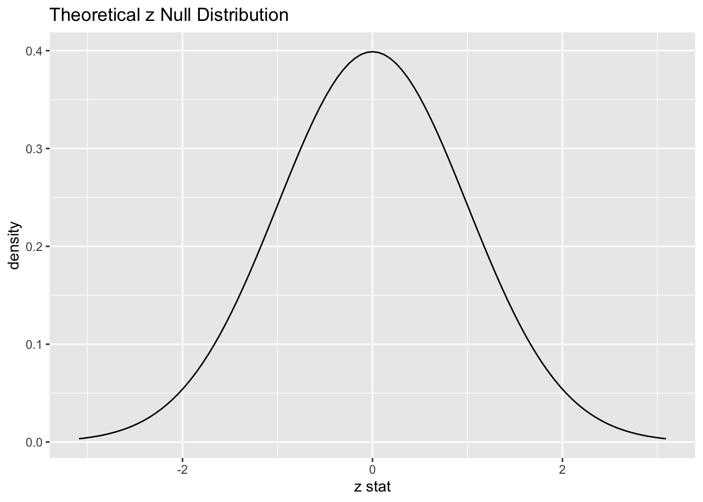
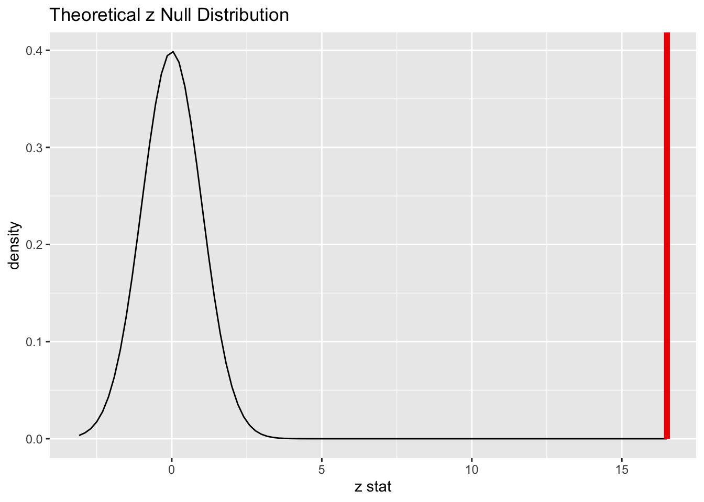

library(tidyverse)
library(infer)Chernobyl data - Statistical Inference using infer package
Libraries
Example from class says that out of 244 birds, 16% had white feather. Lets simulate such data.
feather <- rep('white_feather', 43)
no_feather <- rep('no_white_feather', 223)
set.seed(2022)
chernobyl <- sample(c(feather, no_feather))
chernobyl[1:10] [1] "no_white_feather" "no_white_feather" "no_white_feather" "no_white_feather"
[5] "no_white_feather" "no_white_feather" "no_white_feather" "no_white_feather"
[9] "no_white_feather" "white_feather" chernobyl_df <- tibble(chernobyl)
chernobyl_df# A tibble: 266 × 1
chernobyl
<chr>
1 no_white_feather
2 no_white_feather
3 no_white_feather
4 no_white_feather
5 no_white_feather
6 no_white_feather
7 no_white_feather
8 no_white_feather
9 no_white_feather
10 white_feather
# … with 256 more rows
# ℹ Use `print(n = ...)` to see more rowsSanity check - 1
chernobyl_df %>%
count(chernobyl)# A tibble: 2 × 2
chernobyl n
<chr> <int>
1 no_white_feather 204
2 white_feather 39Sanity check - 2
p_hat <-
chernobyl_df %>%
specify(response = chernobyl,
success = 'white_feather') %>%
calculate(stat = 'prop')
p_hatResponse: chernobyl (factor)
# A tibble: 1 × 1
stat
<dbl>
1 0.160Observed test statistics (z)
z_stat<-
chernobyl_df %>%
specify(response = chernobyl,
success = 'white_feather') %>%
hypothesize(null = 'point',
p = .02) %>%
calculate(stat = 'z')
z_statResponse: chernobyl (factor)
Null Hypothesis: point
# A tibble: 1 × 1
stat
<dbl>
1 15.6Sanity check - 3
\[ z = \frac{\hat{p}- p}{\sqrt{\frac{p(1-p)}{n}}} \]
(p_hat - 0.02)/(sqrt(0.02*0.98/266)) stat
1 16.36704Check the assumptions of proportion test
Simple random sample: birds are caught independently from each other from Chernobyl area.
\(\frac{n}{N} = \frac{244}{1000000} = 0.000244<<0.1\)
\(n = 244 > 40\)
\(np = 266*0.02 = 5.32>5\) and \(nq = 266*0.98 = 260.68>5\)
Application of hypothesis testing
Null Hypothesis vs Alternative Hypothesis, Significance level
\(H_0:\) True proportion of the birds with white feather in Chernobyl region is 0.02, i.e., \(p = 0.02\).
\(H_a:\) True proportion of the birds with white feather in Chernobyl region is larger than 0.02, i.e., \(p > 0.02\).
\(\alpha = 0.001\)
Sampling Distribution under the null hypothesis with checked assumptions.
\(\hat{p}_n\) is approximately normal with \(\mu = p\) and \(\sigma = \sqrt{\frac{p(1-p)}{n}}\).
# approximated sampling distribution of p-hat under the checked assumptions
z_dist <-
chernobyl_df %>%
specify(response = chernobyl,
success = 'white_feather') %>%
hypothesize(null = 'point',
p = 0.02) %>%
assume(distribution = 'z')
z_dist %>%
visualize()
- Observed statistic, test statistic , p-value
Observed statistic, test statistic, p-value
p_hatResponse: chernobyl (factor)
# A tibble: 1 × 1
stat
<dbl>
1 0.160z_statResponse: chernobyl (factor)
Null Hypothesis: point
# A tibble: 1 × 1
stat
<dbl>
1 15.6z_dist %>%
get_p_value(obs_stat = z_stat,
direction = 'right')# A tibble: 1 × 1
p_value
<dbl>
1 1.84e-55Visualization
z_dist %>%
visualize() +
shade_p_value(z_stat, direction = "right")
- Decision:
With the p-value that is nearly 0 (thus, lower than \(\alpha = 0.001\)),
we reject the Null hypothesis that true proportion of birds with white feather is 0.02
observed statistic of 16% cannot be attributed to chance alone.
We are NOT claiming that nuclear reactor disaster is the CAUSE of the observed statistic. We are just saying that observed effect cannot be reasonably attributed to chance alone.